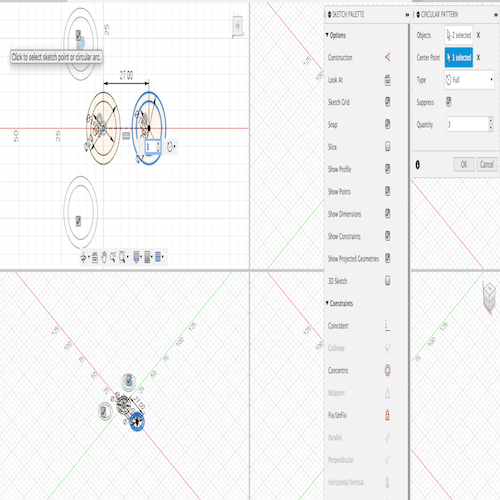

4. Introduction to 2D and 3D Design
# Goal:
Learn briefly about two and three-dimensional designing using Fusion 360 software.
# Tasks:
1- Learn 2D design, i.e. sketch, using Fusion 360 software. Then, utilizing this design to create a 3D one.
2- Learn how to transfer the created designs from Fusion 360 to allow the laser cutting machine and 3D printer to implement them.
# Procedures:
a. Screw Board:
1- After choosing the top view, click on Create Sketch in the toolbar to create a new sketch, then save it.
2- Draw a center rectangle with 50 mm width and 100 mm length starting from the zero point.

3- Draw two perpendicular constriction lines, each is 6 mm in length, at one of the rectangle corners. Then, draw a circle with 5 mm diameter as shown in the following images.
4- To avoid repeating step 3 for the left corners, use the mirror feature by selecting the circle as the object and
adding two perpendicular construction lines as the mirror lines.

5- To transfer this 2D design into a 3D one, you can click on Create then Extrude. For example, I altered the extrusion distance to be 10 mm.
6- To smoothen out the rough edges for the screw board, click on Modify then Chamfer then select the edges and alter the chamfer distance to be 5 mm.
7- The final product of the above steps is shown below. To manufacture the design using a laser cutting machine, select the top face of the 3D design then click on Create Sketch. After that, click on Create then Project/Include to add any 3D design face to the sketch. Please be aware that you have to save it as DXF to allow the machine to process it. However, to create a 3D printed version of the design save the body as a mesh.
b. Spinner:
1- Draw inner and outer circles in the zero point to represent the center bearing with diameters 15 mm and 20 mm, respectively. Then, use the mirror feature to create a reflection of the circles where the distance between the centers is 27 mm.
2- Instead of mirroring the left two bearings, use the circular pattern feature by selecting the objects, which are the inner and outer circles, and the center point, which is the zero point.
3- Connect the center and the outer bearings by drawing 3-point arcs, as shown below.

4- To transfer this 2D design into a 3D one, you can click on Create then Extrude. For example, I altered the extrusion distance to be 10 mm while leaving the inner circles of the outer bearings.

c. Cup:
1- Draw a cross-sectional of the quarter of the cup. The following image shows the details of the cross-section.

2- Click on Create, then Revolve. To get the 3D design, select the cross-section as the profile and the z-axis as the revolving axis.

3- To create a hollow cavity, click on modify, then shell. Set the wall thickness, for example, to 3 mm.
4- To smooth out the edges of the cup, use the fillet feature and set it to 1.25 mm.
5- To sketch the cup handle, click on Project/ Include, then project and select the cup body and draw an arc. Thus, a sketch of the cup body will be produced.Then, use offset to select the thickness of the handle.
6- Click on Extrude, then select the direction of extrusion to be two and join the handle with the cup body. Set the thickness in each direction to be 2 mm.

# Challenges:
I did not face any major challenges because I have previous experience in using Fusion 360 software.